HARJOITUS 2.2: KARTTATIILIPALVELUT
Harjoituksen sisältö
Harjoituksessa hyödynnetään GeoServerissa olevia karttatiilien ja ruudukkojen luontityökaluja.
Harjoituksen tavoite
Harjoituksen jälkeen opiskelija pystyy luomaan ja säätämään omia karttatiilipalveluja.
Arvioitu kesto
40 minuuttia.
Valmistautuminen
GeoServerin palvelimeen on ladattu ja julkaistu useita rasteri- ja vektoriaineistoja. GeoServerin oletusasennukseen on myös integroitu GeoWebCache, jota GeoServer käyttää karttatiilien luomiseen ja hallitsemiseen.
Tile Caching
GeoServer sisältää Tile-palvelut osana GeoWebCache-palvelua.
Avaa Tile Caching → Caching defaults ja tarkista, mitkä karttatiilipalvelut ovat käytössä GeoServerin asennuksessasi.
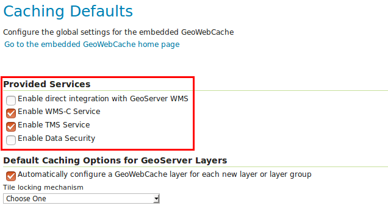
Oletuksena aktivoituna ovat WMS-C- (WMS Service-Cached) ja TMS (Tile Map Service)-karttatiilipalvelut.
Avaa vielä Tile Caching → Tile Layers ja huomaa myös, että kaikille tasoille on automaattisesti luotu oma karttatiilitaso.

GeoWebCache-käyttöliittymä
Yleisimmät karttatiilipalvelun asetukset määritellään jo tutuiksi tulleissa eri GeoServerin web-käyttöliittymän asetusosissa. Tarkemmin karttatiilipalvelun toimintaa hallitaan GeoWebCache:n käyttöliittymästä.
Palaa Tile Caching → Caching Defaults -näkymään ja avaa vielä GeoWebCache:n oma asetusnäkymä painamalla Go to the embedded GeoWebCache home page.
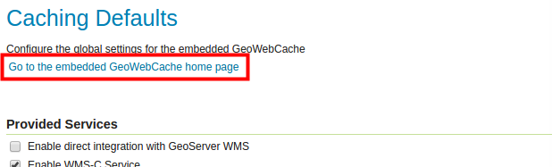
GeoWebCache on oletuksena asennettu GeoServeriin ja se hallitsee kaikkia karttatiiliä, joita jaetaan karttatiilipalvelujen kautta.
Avaa lista demoista A list of all the layers and automatic demos.
Kaikilla GeoServerin tasoilla on oma karttatiilipalvelu käytössä: 
Avaa helsinki:ilmakuvat OpenLayers png-esikatselu linkkiä ja selaile karttaa. Huomaat, miten eri karttatiilet lasketaan ja piirretään näyttöön sen mukaan kun palvelin saa niitä luotua.
Testaa, että karttatiilet pysyvät palvelimessa uudelleen käytettävänä siirtymällä kartalla paikasta toiseen suurin piirtein samalla kartta-alueella. Karttatiilet tulevat nyt nopeammin näkyviin, koska GeoServerin ei enää tarvitse piirtää niitä, vaan se vain välittää palvelimella jo valmiina olevia karttatiiliä.
Tasokohtaiset asetukset
Tasojen karttatiiliasetukset löytyvät päävalikon Tile Caching → Tile Layers -näkymän kautta. Avaa helsinki:ilmakuvat_keskusta -tason ominaisuudet painamalla tason linkkiä taulusta. 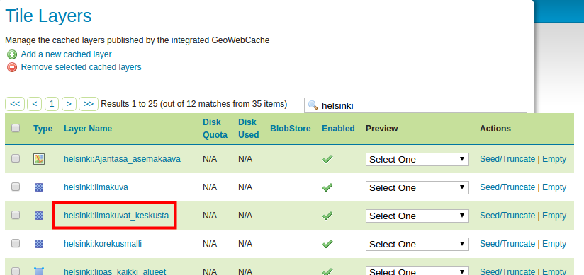
Valitse sitten Tile Caching.
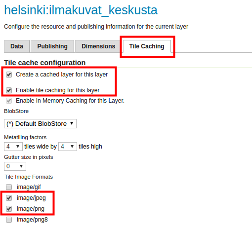
Oletusasetukset on määritelty siten, että kaikille uusille tasoille luodaan automaattisesti karttatiilet. Myös sekä jpeg- että png-kuvatiilet ovat oletuksena aktivoituna.
Selaa vielä tämän näkymän alaosaan, josta selviää Available gridsets -osiosta, että kaksi eri karttatiiliruudukkoa on oletuksena käytössä: EPSG:4326 (WGS 84) ja EPSG:900913 (Google Mercator): 
Psst! Tasokohtaisia tiilitysasetuksia pääset myös muokkaamaan Data → Layers näkymän kautta valitsemalla tason ja sen jälkeen Tile Caching -välilehden.
Karttatiilien esiluominen
Palaa Tile Caching → Tile Layers näkymään. Tältä sivulta voit myös esikatsella tiilitettyjä karttapalveluita.
Preview-sarakkeen alta valikosta löytyy kyseiselle tasolle saatavilla olevat tiilitysvaihtoehdot. Saat aikaiseksi saman esikatselun kuin käyttäessäsi GeoWebCache:n näkymää.
Actions-sarakkeen alta löytyy vielä linkki Seed/Truncate, jolla pääse GeoWebCache:n tasojen esitiilittämiseen. Empty-linkillä tyhjennetään kaikki tasolle aiemmin tallennetut karttatiilet. 
Valitse nyt Seed/Truncate -linkki Helsingin ilmakuvien tason karttatiilien luomista varten.
GeoWebCache-näkymässä sivun yläosasta löytyy yleisiä toimintoja ja lista meneillään olevista tehtävistä. Karttatiilien luominen on hyvin resurssi-intensiivinen ja kohtuullisia levytiloja vaativa prosessi. On myös tyypillistä, että tehtävien eli karttatiilien luominen voi kestää hyvinkin pitkään (tunteja, jopa päiviä). Sivun tiedot päivitetään käyttämällä Refresh list -toimintoa. 
Tiilien luomista varten asetukset löytyvät sivun alapuolelta Create a new task -osiosta.
| Number of tasks to use | Määrittää kuinka monta prosessia käynnistetään karttatiilien luomiseksi |
| Type of operation | Tiilien luomisen toimintotapa Reseed: luodaan kaikki karttatiilet, korvataan vanhat karttatiilet Seed: luodaan vain puuttuvat karttatiilet Truncate: poistetaan karttatiilet palvelimesta |
| Grid set | Määrittää mille karttatiiliruudukolle luodaan karttatiilet |
| Format | Karttakuvan tiedostomuoto (esim. jpg, png) |
| Zoom start, Zoom stop | Mittakaavavälit luotavalle karttatiilille (mittakaavat on määritelty karttatiiliruudukoille) |
| Bounding box | Sijainnin suorakaiderajaus, jolta karttatiilet luodaan |
Aseta Number of tasks to use -asetukseksi 1.
Psst! 2*tietokoneen_suorittimien_lukumäärä on hyvä lähtökohta kokeilulle.
Aseta tehtävän asetukset seuraavalla tavalla, huomaa erityisesti Zoom stop -asetus. Laita arvoksi 15, niin lasketaan valmiiksi mittakaavatasot 0-15:
Paina Submit.
GeoServer (GeoWebCache) muodostaa nyt karttatiilet valitusta palvelusta mittakaavatasoista 0–15.
Muodostamisen ajan käyttöliittymässä voi seurata karttatiilien valmistumista:
Paina Refresh list -linkkiä, kun haluat päivittää tiedot laskennan etenemisestä.
Karttatiiliruudukon määritelmä ja tason sijainnin rajauksen mukaan mittakaavoille 0-15 tarvitaan 1 922 karttatiiltä. Kuvien piirtäminen kestää etäpalvelimella näillä asetuksilla minuutin verran.

Huomaa, että karttatiilet luodaan oletuksena tason sijainnin rajauksen mukaisesti (ellei sitä toisin ole määritelty). 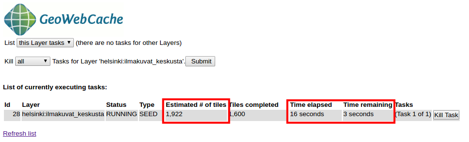
Laske vielä karttatiilet tasolle 16 (määrittele zoomaus aloitus- ja lopputasoksi 16). Päivitä laskennan aikana sivua ja tutki karttatiilien luomisen etenemistä.

Jos erehdyt määrittelemään vääriä asetuksia, voit pysäyttää laskennan käyttämällä Kill all Tasks… -toimintoa painamalla Submit-näppäintä. 
Taso 16 vastaa mittakaavaa 1:4 262. Kaikkiaan sen tiilittämiseen tarvitaan 3 700 karttatiiliä, joiden luomiseen menee noin pari minuuttia. Laske vielä taso 17 samalla tavalla ja kirjoita muistiinpanot prosessorimäärästä, karttatiilistä sekä ajasta.
Taso 17 näyttää kartalla tältä: 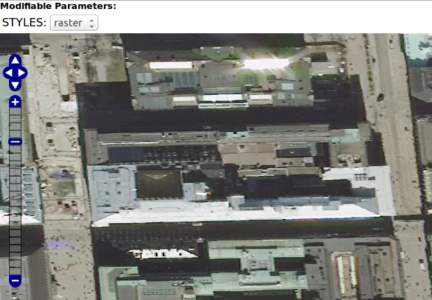
Karttatiilien kovalevyn käyttö
Edellisessä kohdassa laskettiin karttatiiliä vain yhdelle tasolle (ilmakuvat_keskusta), vain yhteen karttatiiliruudukkoon (EPSG:4326) ja vain yhdelle kuvaformaatille (png). Tämän karttatason mittakaavatason 16 karttatiilet vievät noin 300 MB levytilaa.
Karttatasoilla saattaa olla useita karttatiilipalveluita riippuen siitä, kuinka monta karttatiiliruudukkoa ja kuvatyyppiä on tason tiilitysasetuksissa määritelty.
Karttatiilien luominen kannattaa suunnitella etukäteen ja toteuttaa huolellisesti. Yksi tärkeä asetus karttatiilipalveluissa on karttatiilien kovalevyn käytön tarkkaileminen ja hallinnointi. Siihen on GeoWebCache:ssa erilaisia asetuksia ja osaa niistä voi säätää suoraan GeoServeristä.
Avaa Tile Caching → Tile Layers -näkymästä ilmakuvat_keskusta tason asetukset. Avaa vielä Tile Caching välilehti.
Sivun asetuksista voit tarkistaa, että sekä jpeg- että png-kuvaformaatit ovat rastitettuina. Sen lisäksi on määritelty kaksi eri karttatiiliruudukkoa käytettäväksi. Tämä tarkoittaa sitä, että tämä taso on saatavilla kuudella eri karttatiilitasolla. Äskettäin laskettiin valmiiksi karttatiiliä vain yhdelle.
Voit tarkistaa kovalevyn käytön tasokohtaisesti Tile Caching → Tile Layers -näkymästä. Huomaa kuitenkin, että oletusasetuksilla tämä tieto ei ole saatavilla (N/A). 
Tiedon näkymiseksi pitää ensin määrittää, kuinka paljon kovalevytilaa karttatiilipalvelulla on lupa käyttää. Oletuksena GeoWebCache voi käyttää koko palvelimen levytilan.
Palataan hetkeksi takaisin näkymään Tile Caching → Disk Quota. Rastita siellä Enable disk quota ja määrittele vielä Maximum tile cache size -arvoksi 2 GiB. 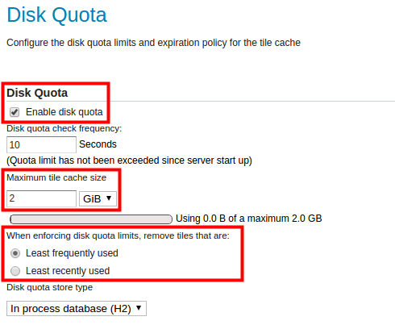
Paina lopulta Submit, niin asetukset tulevat tallennetuksi.
Psst! Käyttöliittymässä käytetään lyhenteitä GiB ja GB. Niiden ero tulee siitä, että GiB (Gibibyte) on binäärijärjestelmä monikerta kun GB (Gigabyte) on kymmenjärjestelmä monikerta: GiB on 1024 MiB ja tavuina 230 tavua → eli 1 073 741 824 tavua GB on 1000 MB ja tavuina 109 tavua → eli 1 000 000 000 tavua
Huomaa vielä, että When enforcing disk quota limits, remove tiles that are -asetus tarkoittaa se, että GeoServer/GeoWebCache ei lopeta karttatiilien luomista, vaikka määritelty maksimi-karttatiilien levykäyttö saavutettaisiin. Sallitun levytilan täyttymisen jälkeen palvelin alkaa poistaa automaattisesti joko vähiten tai pitkän aikaan käyttämättä olleita karttatiiliä. Karttatiiliä tuotetaan siis jatkuvasti, vaikka maksimilevytilan raja tulisikin täyteen.
Paina Submit ja palaa Tile Caching → Tile Layers -näkymään.
Tarkista, että nyt Disk Used -sarakkeessa näkyy tarvittavat tiedot. Ilmakuvien karttatiilet vievät tällä hetkellä alle 500 megatavua. Muut tasot eivät käytä yhtään levytilaa. 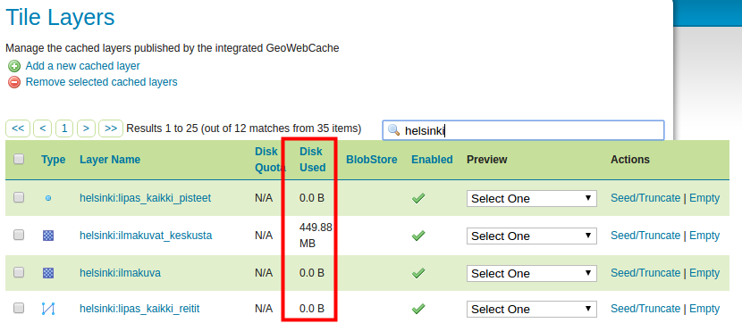
Karttatiilet tulevat myös tallennetuksi automaattisesti aina karttatiilipalvelun luodessa karttatiiliä. Kokeile esikatsella eri tasojen karttatiilitasoja (Tile Caching → Tile Layers → Preview). Esimerkiksi rakennukset- ja taustakartta-tasoja. 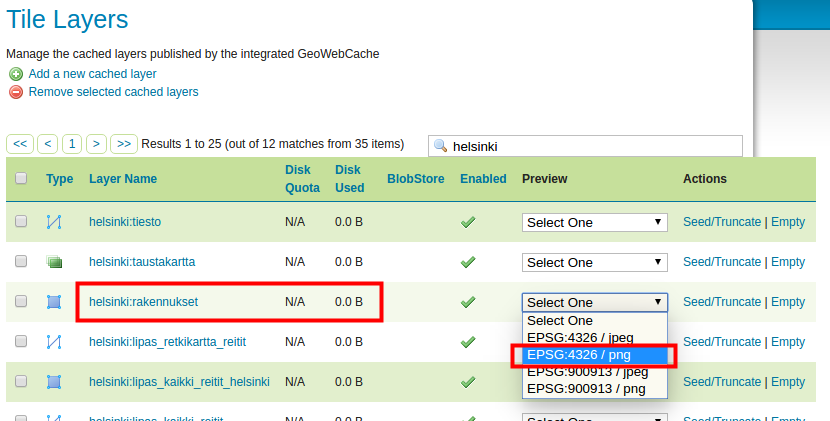
Voidaan todeta, että sen jälkeen myös niiden kohdalla Disk Used -sarakkeessa on tietoa levytilan käytöstä. Niiden levytilan käyttö kasvaa sitä mukaan kun eri kartta-alueita ja tiilitasoja käytetään. 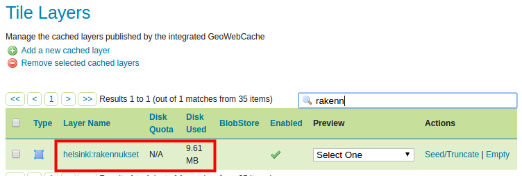
Edellisessä kohdassa laskettiin muutama karttatiilitasoja. Esimerkiksi Helsingin ilmakuvien mittakaavatason 16 karttatiilet vievät levytilaa reilut 300 megatavua.
Tasojen käyttämää levytilaa voidaan myös vapauttaa. Voit halutessasi tyhjentää tietyn tason kaikki karttatiilet käyttäen tason Empty-linkkiä. Kokeile tyhjentää hki-rakennukset-tason karttatiilet.
On mahdollista myös tyhjentää ainoastaan tietyn mittakaavan karttatiilet GeoWebCache-käyttöliittymällä:
Avaa ilmakuvat_keskusta-tason oikealta Seed/Truncate ja valitse mittakaavataso 17 alku- ja loppumittakaavaksi.
Valitse toiminnoksi Truncate ja lopuksi Submit. Tällä tavalla poistat palvelimesta kaikki mittakaavatason 17 karttatiiltä.
Voit tarkistaa Tile Layers -näkymästä ilmakuvat_keskusta-tason nykyisen kovalevyn käytön.
Psst! Helsingin ilmakuvien mittakaavataso 17 vaatii 1,4 GB.
Karttatiiliruudukot
GeoServerin oletusasennuksesta löytyy muutama valmiiksi määritelty karttatiiliruudukko. Nämä ruudukot ovat joko WGS 84 tai Web Mercator -koordinaattijärjestelmässä.
Avaa Tile Caching → Gridsets ja paina sitten EPSG:4326 -nimistä ruudukkoa. 
Karttatiiliruudukon määritelmiin kuuluvat muun muassa:
| Coordinate Reference System | Koordinaattijärjestelmä, jolla ruudukot määritellään. |
| Gridset bounds | Karttalehtijaon sijainnin rajaus, jolla määritetään, mille sijainnille karttatiiliruudukko on rajattu. |
| Tile Matrix Set | Karttatiilimalli (kuvapyramidi), jolla määritellään karttatiiliruudukolle valitut mittakaavat. Tämä voidaan määritellä joko resoluution tai mittakaavan mukaan. |
Karttatiiliruudukkoja voi myös laatia omiin tarpeisiin.
JHS180 mukainen karttatiiliruudukko
JHS180 suosituksesta löytyy muun muassa suositus kansallisesta karttatiiliruudukosta, joka perustuu OGC-standardien määrittelyihin. Suosituksesta löytyy muun muassa seuraavat määritelmät:
| Rajapintastandardi | OGC:n WMS-T standardi |
| Koordinaattijärjestelmä | ETRS89 / TM35-FIN (EPSG:3067) |
| Käytettävä origo | Itä -548 576 m, pohjoinen 8 388 608 m (tiilien ankkuripiste on vasen yläkulma) |
| Resoluutiotasot | 0.25 m, 0.5 m, 1 m, 2 m, 4 m, 8 m, 16 m, 32 m, 64 m, 128 m, 256 m, 512 m, 1 024 m, 2 048 m, 4 096 m ja 8 192 m |
| Tiilien koko pikseleissä | 256*256 pikseliä |
| Kuvaformaatti | Image/png |
Näillä määritelmillä, karkeimmalla resoluutiotasolla (taso 0) on vain yksi tiilikuva kooltaan 2 097 152 m * 2 097 152 m (8 192*8 192 pikseliä). Tämän kuvatiilen pohjois-etelä -suuntainen keskilinja sijoittuu projektiokaistan keskimeridiaanille (27 astetta). Ja tiilen pohjoisreunan pohjoiskoordinaatti on tiilen koon monikerta päiväntasaajalta laskien (4 * 2 097 152).
Seuraava taso (taso 1) muodostuu jakamalla 0 tason ainoa tiili neljään yhtä suureen osaan. Ja niin edelleen muodostuvat seuraavat tasot, taso 15 asti. Katso tarkemmin luentomateriaalista.
Uuden karttatiiliruudukon luominen
Luodaan GeoServerin palvelimelle uusi karttatiiliruudukko JHS180-suositusten mukaisesti.
Valitse Tile caching → Gridset päävalikosta ja luo uusi karttatiiliruudukko painamalla Create a new gridset.
Anna nimeksi esimerkiksi JHS180_EPSG3067 ja kirjoita lyhyt määritelmä ruudukosta.
Valitse Coordinate Reference System -arvoksi EPSG 3067.
Määrittele vielä ruudukon kattavuus aiemmin mainituilla JHS180 suosituksella, eli karkeamman tason kattavuus.
Suosituksissa sanotaan, että vasemman yläkulman koordinaatit (origo) ovat itäkoordinaatti -548 576 m ja pohjoiskoordinaatti 8 388 608 m. Näitä vastaavat Min X ja Max Y koordinaatit. Karkeamman tason koko metreinä on 2097152 * 2097152 joten:
Max X on sitten: -548576 + 2097152 = 1 548 576 m
Min Y on sitten: 8388608 – 2097152 = 6 291 456 m
| JHS180-mukaisen ruudukon kattavuus |
+=================================================+========================================+ | Min X: -548 576 m | Max X: 1 548 576 m | +————————————————-+—————————————-+ | Min Y: 6 291 456 m | Max Y: 8 388 608 m | +————————————————-+—————————————-+
Pidä tiilen pikselikoko oletuksena, 256 px.
Samat arvot löydät suosituksen mukaisesta tiiliruudukosta.
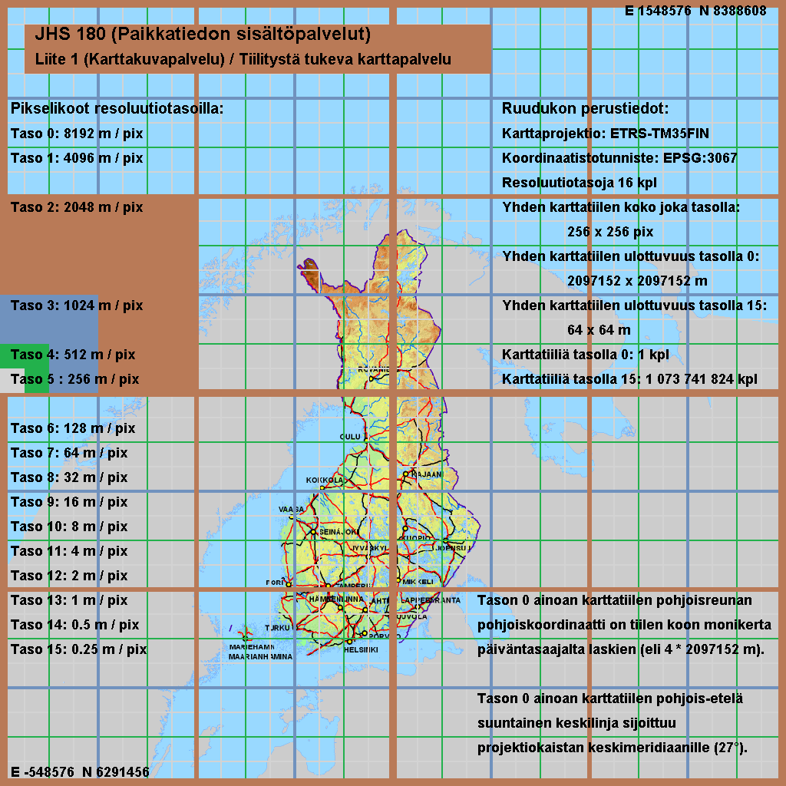
Täytä karttatiiliruudukon tiedot yllä mainituilla arvoilla, kuitenkin siten, että et käytä välilyöntejä koordinaatteja kirjoittaessasi.
Määritellään seuraavaksi resoluutiotasot. Tile Matrix Set -asetuksissa voit määritellä JHS180 suosituksessa mainitut resoluutiotasot.
Pidä valittuna Resolutions. Aloita määrittelemällä taso 0. 
Paina Add zoom level ja huomaa, että Pixel Size -arvoksi tulee 8 192 (pilkut numeroissa johtuvat englannin numeroformaatista), joka on juuri suosituksessa mainittu kuvatiilen pikselikoko tällä tasolla. Huomaa, että Scale-arvo täyttyy myös automaattisesti.
Kun painat uudelleen Add zoom level, uuden tason Pixel Size -arvo tulee automaattisesti puoleksi edellisen tason pikselikoosta, eli 4 096.
Luo loput resoluutiotasot (tasolle 15 asti) samalla tavalla.
Tiles-kohdalta voit tarkista kuinka monta tiiliä tarvitaan jokaisen tason puolelta.
Paina lopulta Save, niin uusi JHS180-karttatiiliruudukko on käytettävissä palvelimessasi.
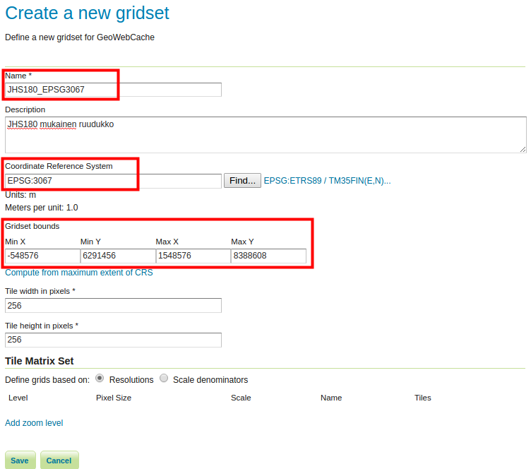
Suomen OpenStreetMap-tiestö
Äskettäin luomamme karttatiiliruudukko soveltuu aineistoihin, jotka kattavat koko Suomen.
Aiemmissa harjoituksissa olet harjoitellut aineistojen käyttöönottoa GeoServerissä. Samasta jo aiemmin käytetystä gs_training PostGIS-tietokannasta löytyy Suomen OpenStreetMap-tiestöaineisto EPSG 3067 -koordinaattijärjestelmässä.
Luo uusi taso tiestö-aineistosta. Suomen aineisto löytyy tietokannasta suomi-skeemasta nimellä osm-tiet.
Psst! Muista, että ensin luodaan store, josta luodaan viittaus edellä mainittuun skeemaan ja sen jälkeen voidaan lisätä tasoja GeoServer-palvelimelle.
Voit katsoa ohjeita paikkatietokannat-harjoituksesta, jossa lisättiin aineistoja GeoServeriin PostGIS-paikkatietokannasta. Voit myös kysyä tarvittaessa kouluttajalta.
Luo workspace, anna sille nimeksi suomi.
Luo PostGIS-store, laita se suomi-workspaceen ja nimeä se suomi_tiesto_3067:ksi (tietokannan nimi on gs_training, skeema on suomi, käyttäjä on postgres ja salasana on gispo).
Kyseisestä storesta löytyy ainoastaan yksi aineisto (osm-tiet). Luo siitä uusi GeoServer-taso, nimeä se suomi_tiesto_3067:ksi (täytä myös muuta tarvittavat tiedot).
Tarpeen vaatiessa, voit katsoa mallia alla olevasta kuvakaappauksesta PostGIS-storen luomisesta:


Oman karttatiiliruudukon käyttöönotto
Avaa Tile Caching → Tile Layers ja paina suomi_tiesto_3067 -linkkiä. Avaa vielä Tile Caching -välilehti ja selaa sivun loppuun, josta löydät karttatiiliruudukko-asetukset.
Valitse Available gridsets -osion alta Add grid subset -kohdasta uusi JHS180_EPSG3067-karttatiiliruudukko. Paina vielä plus-kuvaketta.
Tarvittaessa voit määritellä, mitkä zoomaus-tasot ovat käytettävissä tai mitkä tallentuvat välimuistiin käyttäen Published- ja Cached zoom levels -asetuksia.
Paina lopulta Save. 
Esikatsele nyt suomi_tiesto_3067 uudella karttatiiliruudukolla näkymästä Tile Caching → Tile Layers. Valitse tiestötason kohdalla JHS180_EPSG3067/png.
Esikatselussa on käytössä luomasi EPSG:3067 karttatiiliruudukko (alla huomataan, kuinka käytössä ovat karttatiilet, ja kuinka Etelä-Suomea kohti mentäessä karttatiilet eivät vielä ole ehtineet renderöitymään ruudulle näytönkaappauksen ottohetkeen mennessä):

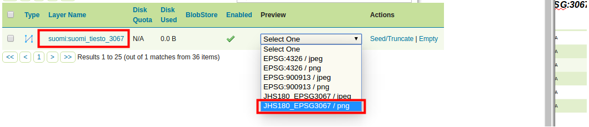
Paikallisen karttatiiliruudukon muodostaminen
Geoserveriin voidaan muodostaa tarpeiden mukaan hyvin monenlaisia karttatiiliruudukoita. Joissakin tapauksissa voi olla tarpeen luoda oma paikallinen karttatiiliruudukko. Paikallisen karttatiiliruudukko voi olla tarpeellinen, jos karttatiilipalvelulle on runsaasti käyttöä ja aineistoihin halutaan yhdistää paikallisessa koordinaattijärjestelmässä olevia tietoaineistoja (vektori- tai rasteriaineistoja).
Luodaan nyt Helsingin alueelle oma karttatiiliruudukko, joka käyttää ETRS89 / GK25FIN (EPSG:3879) -koordinaattijärjestelmää. Määritellään resoluutiotasot mittakaavan mukaan.
Palaa Tile Caching → Gridsets-näkymään ja paina Create a new gridset -toimintoa. Nimeä uusi karttatiiliruudukko HKI-GK25FIN-nimellä.
Määrittele sitten EPSG:3879 koordinaattijärjestelmäksi ja paina vielä Compute from maximum extent of CRS.
Rastita Tile Matrix Set -osion alta Scale denominators ja lisää kymmenen karttatiilitasoa (tasot 0-9) painamalla Add zoom level. 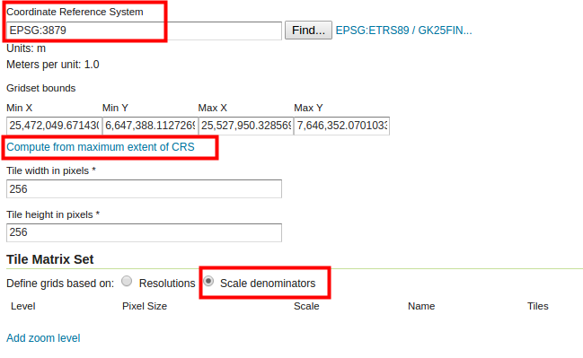
Määrittele ensimmäisen tason mittakaava käsin Scale-sarakkeessa, anna arvoksi 500 000. Määrittele loput: 250 000, 100 000, 50 000, 20 000, 10 000, 5 000, 2 500, 1 000 ja 500 . 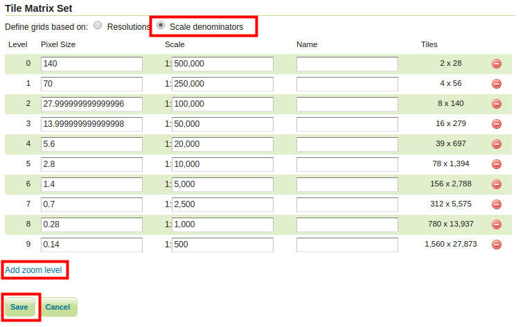
Paina lopussa Save.
Ota uusi karttatiiliruudukko käyttöön samalla tavalla kuin aiemmin.
Avaa Tile Caching → Tile Layers → taustakartta → Tile Caching. Ryhmätasoillekin voidaan määritellä karttaruudukkoja.
Selaa sivun loppuun, josta löydät tiilitysasetukset.
Valitse Available gridsets -osion alta Add grid subsret -kohdasta uusi HKI_GK25FIN-karttatiiliruudukko. Paina vielä plus-kuvaketta.
Paina lopulta Save.
Näkymästä Tile Caching → Tile Layers, esikatsele nyt ortokartta uudella karttatiiliruudukolla (valitse esimerkiksi HKI_GK25FIN/jpeg). Huomaa, että mittakaavatasoja on vain kymmenen ja ne vastaavat karttatiiliruudukon asetuksissa määriteltyjä mittakaavoja.